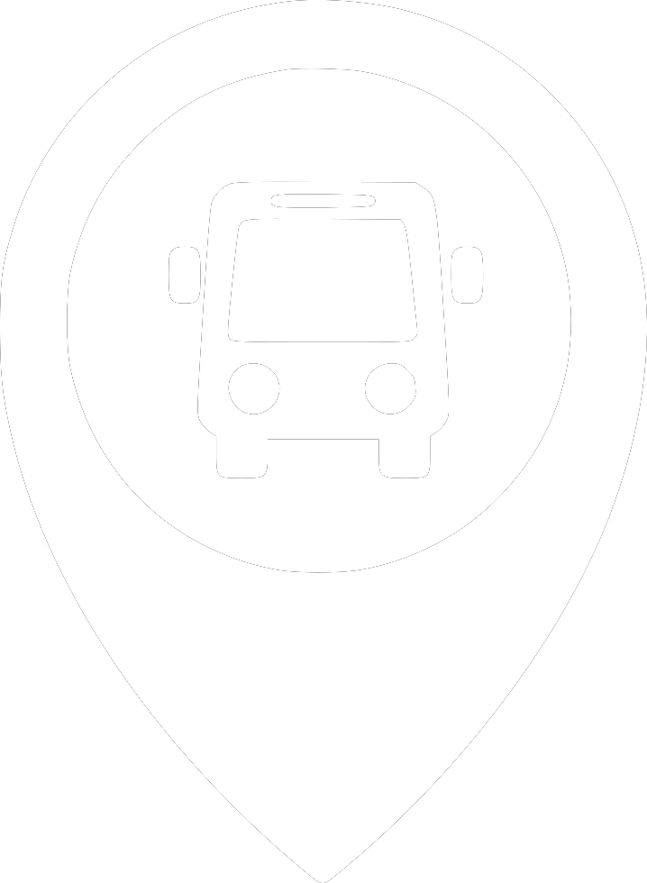

<nav class="navbar navbar-expand-md navbar-dark fixed-top bg-danger">
    <a class="navbar-brand" routerLink="/"></a>
    <button class="navbar-toggler" type="button" data-toggle="collapse" data-target="#mainNavbar" aria-controls="mainNavbar"
      aria-expanded="false" aria-label="Toggle navigation">
      <span class="navbar-toggler-icon"></span>
    </button>
  
    <!-- LOGGED: {{isLogged}} -->
        
    <div class="collapse navbar-collapse" id="mainNavbar">
      <ul class="navbar-nav ml-auto">
        <!-- <li class="nav-item" *ngIf="!isLogged">
          <a class="nav-link" routerLink="/user/register">Registro
          </a>
        </li> -->


        <li class="nav-item" *ngIf="isLogged">
            <a class="nav-link" routerLink="/user/profile">Perfil</a>
        </li>

        <li class="nav-item" *ngIf="isLogged">
          <a class="nav-link" routerLink="/mytickets">Mis Tickets</a>
        </li>
        <li class="nav-item" *ngIf="isAdmin">
          <a class="nav-link" routerLink="/admin/cluster">Cluster</a>
        </li>
        <li class="nav-item" *ngIf="isAdmin">
          <a class="nav-link" routerLink="/admin/list-users">Lista de usuarios</a>
        </li>
        <li class="nav-item" *ngIf="!isLogged">
          <a class="nav-link" routerLink="/user/login">Iniciar sesión
          </a>
        </li>
        <li class="nav-item" *ngIf="isLogged">
          <a href="#" class="nav-link" (click)="onLogout()">Cerrar sesión
          </a>
        </li>
      </ul>
    </div>
  </nav>